Kairn Design Studio
Embedded interfaces for two hardware products
A freelance mission designing the screens of an e-bike motor ecosystem for Aventon and of a networked avalanche transceiver for a major European brand. Fixed displays, no touch input, gloved hands, and information that has to be read while moving or while running a search.
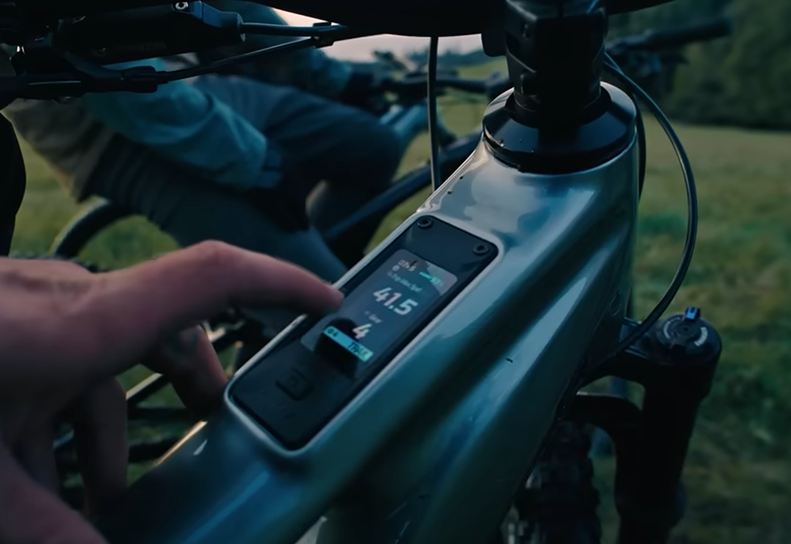
What I want you to take from this project
Three things, if you are deciding whether to talk to me.
I start from the physical limits of the device
Screen dimensions, segment count, glare, viewing angle and glove interaction were documented per product before any wireframe existed. Everything after that followed from those numbers.
I work where a misread has a cost
On the transceiver, a second of hesitation during a search is a second of burial. That sets a different bar for what counts as a finished screen.
My work ships in products people buy
The Aventon UI system went through pre-production and is now in the hands of riders.
Project context
- Role
- Freelance product designer at Kairn Design Studio. Constraint analysis, interaction design, UI system, Figma prototyping, developer handoff.
- Timeline
- 2025. Two product tracks running in parallel.
- Tools
- Figma · Figma Variables · Auto Layout · Interactive prototyping · Design system documentation
- Products designed
- Aventon e-bike motor ecosystem: a top-tube display for glanceable reading, and a handlebar dashboard for structured navigation.
Networked avalanche transceiver for a major European brand: search interface for a device that exchanges data with the other transceivers around it. - Physical constraints
- Hardware-bound screens, no touch input. Operated with gloves, in rain, direct sunlight and sub-zero temperatures. On the transceiver, a segment LCD with a fixed, countable vocabulary of shapes.
- Current status
- Aventon UI system shipped in the production hardware. Transceiver track ongoing.
The problem
Both products are read by someone who cannot stop what they are doing. A rider on a trail keeps their hands on the bars and their attention on the ground ahead. A rescuer runs a search under time pressure, with degraded motor control from the cold.
The e-bike question was one of subtraction. How small can a unit of information be and still be unambiguous at arm's length, in bright light, in half a second.
The transceiver posed the opposite question. The brand is developing a networked generation of the device: each transceiver becomes a node, and searchers and buried victims form a temporary network in the avalanche field. A conventional transceiver picks up a transmitting device within roughly a hundred metres and shows a direction. A networked one can also report that a victim is already being searched by someone else, that a signal exists far beyond the usual range, and that a victim has been marked because they are located and being dug out.
Knowing that changes what a rescuer does next, so the device also lets them choose which signal to pursue rather than always following the nearest one. That information matters most on large-scale, multi-victim rescues, which in practice means professional teams. The device still ships to anyone who walks into a shop. So the interface had to carry a larger set of states on a segment LCD, without making the basic search harder for the person who will only ever run one.
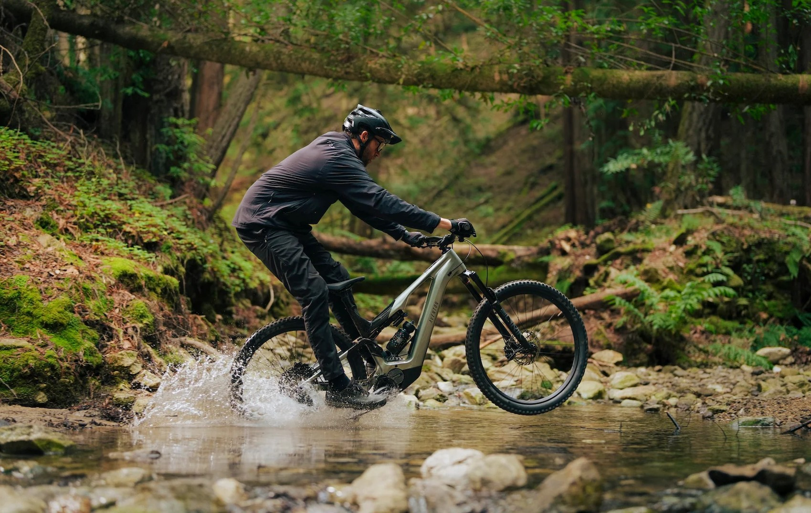
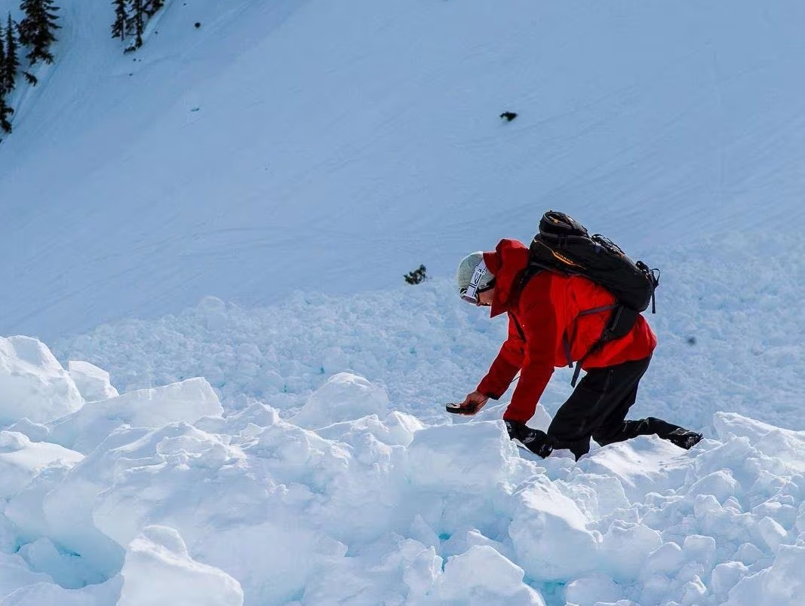
Research and constraints
Aventon arrived with persona research already done, covering two rider profiles and their use contexts. That work was kept as the foundation and extended with a constraint analysis specific to each device.
- Physical constraint mapping. Screen dimensions, ambient light levels, viewing distance and angle, glove interaction limits, documented per product.
- Segment budget. On the transceiver, the display is a finite set of segments defined by the hardware. Every state the network could produce had to be expressible inside that set, which capped the design vocabulary before the first sketch.
- Competitive audit. Existing e-bike HMI systems (Bosch, Shimano, Specialized) and professional transceivers (Mammut, Ortovox, Arva). The networked behaviour had no precedent to audit, so the reference points stopped at conventional search interfaces.
- Scenario modelling. Edge cases written before wireframing: direct sunlight, one hand on the bar, a multi-victim field where three states apply to three different signals at once.
Design decisions
Every decision here traded information richness against reading effort, and the hardware set the terms each time.
One design language, two divergent layouts
The top-tube display and the handlebar dashboard share type scale, colour coding and iconography, managed as Figma Variables. Their layout logic separates from there, because one is read without looking and the other is navigated on purpose.
Cost: two layout systems maintained against a single token set, and every token change verified twice.
Three data points on the top-tube display
Anything not readable in under 300 milliseconds came off the primary screen. What stayed: battery level, assist mode, speed. The rest moved to the dashboard, behind deliberate input.
Cost: riders who want more at a glance have to look at the second screen, and the split needs explaining once in the product.
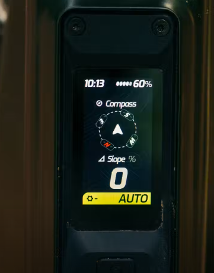
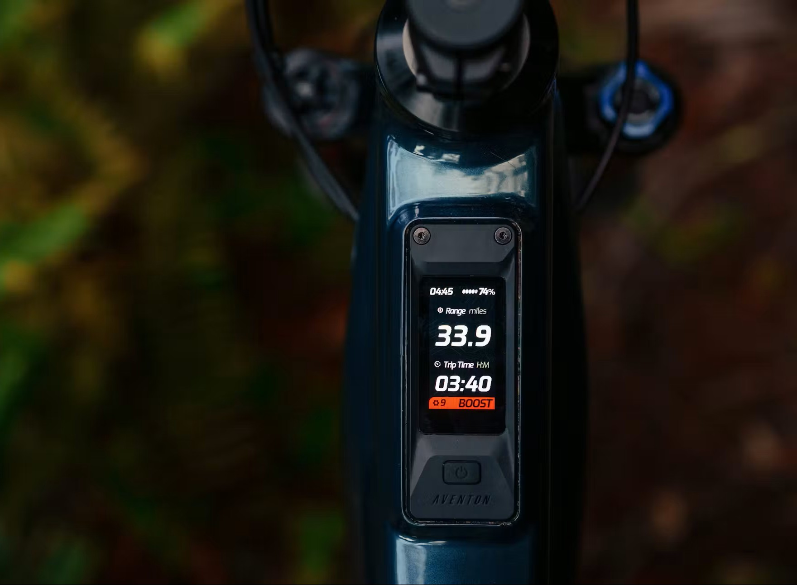
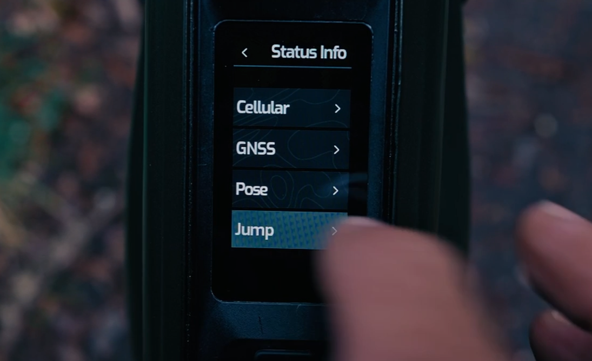
The search screen keeps its conventional form
Direction and distance stay where a rescuer trained on any other transceiver expects them. Network information attaches to the signals already displayed rather than opening a layer of its own. Someone switching brands mid-season loses nothing.
Cost: the innovation is invisible until it applies, and the brand gets no showcase screen out of it.
Every signal carries a distance and a status
Each victim the network reveals is listed with their distance and, where it applies, a status: under search by someone else, or marked as located. A signal at 70 m that is already marked and one at 90 m that nobody has reached are two different situations, and the screen has to show them as such. The segment budget set how many marks could be told apart at a glance, which in turn capped how many states the feature could carry.
Cost: the screen holds more than a conventional transceiver shows, and reading it takes longer than reading a single bearing. That cost is paid by every user, including the one who only ever needs the nearest signal.
Proximity orders the list, the rescuer overrides it
Conventional transceivers send the search to the closest signal and offer nothing else. Here proximity still orders the list, and the rescuer can select any other signal and work that one instead. The status marks are what make the choice worth having: the nearest victim being already marked is a reason to move on to the one at 90 m that no one has reached.
Cost: it introduces a decision into a moment that training has made automatic. Going for the nearest signal is a reflex built by every transceiver on the market, and overriding it demands a judgement call under stress that a conventional device never asks for.
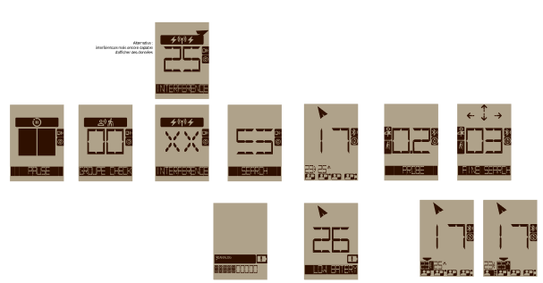
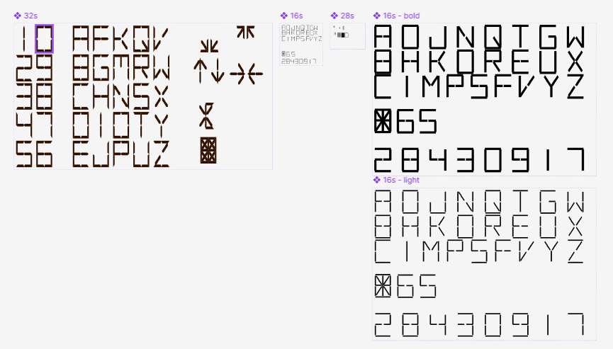
Process and iterations
Wireframes stayed rough on purpose. The questions at that stage concerned legibility alone: what is still readable when you squint, at arm's length, in bright light, in half a second. Visual treatment came after the hierarchy held.
The transceiver work ran against the segment budget throughout. Early versions expressed network states with short abbreviations, which the display could technically render and which failed as soon as they were read cold, without training. Moving to marks attached to each signal cost fewer segments and removed the reading step.
Handoff for Aventon went to a firmware team working with pixel budgets rather than CSS. The design system was documented in those terms: fixed sizes, states enumerated one by one, nothing left to resolve at runtime.
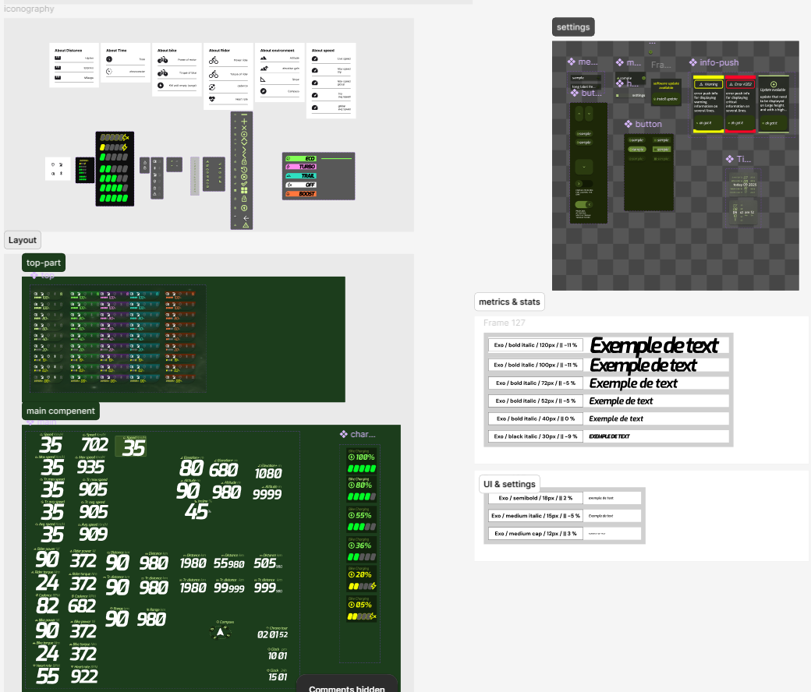
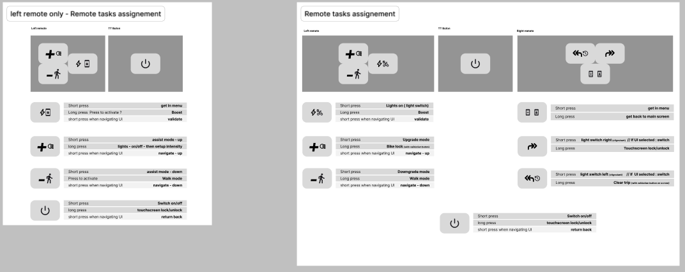
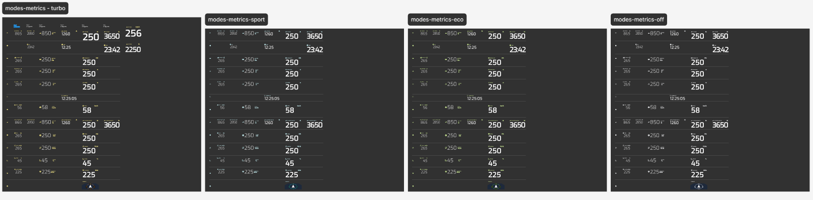
Outcome and reflections
The Aventon motor ecosystem reached the market with the UI system from this mission in the shipped hardware. The transceiver track is still running.
What this project sharpened in my practiceA hardware budget settles arguments that research alone leaves open. When the display offers a countable number of segments, feature scope stops being a matter of opinion.
Designing for a user with no attention to spare transfers well beyond hardware. Most professional tools are used by someone in the middle of something else, and the 300ms test applies to them too.
A design system for firmware is a different object than one for the web. Enumerated states, fixed dimensions, no interpolation.
What I would do differentlyCheck the recreational user earlier. The network features were framed around professional rescue from the start, which is where they pay off, but the device sells to anyone. That group should have been in the room before the states were settled, not after.
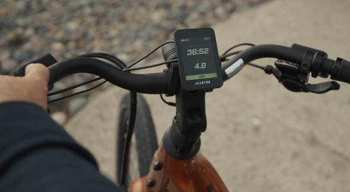